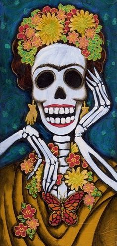

|
La Catrina mexicana’ es uno de los íconos más representativos de la cultura en México y un personaje que no puede faltar en Día de Muertos, ya que es un símbolo de muerte y un recordatorio de que en cualquier momento puedes perecer. ¿Cuál es el origen de La Catrina mexicana?‘La Catrina’ originalmente era una ilustración creada por el escritor mexicano José Guadalupe Posada, a principios del siglo XX. El primer nombre que tuvo esta fue‘La Calavera Garbancera”. El pintor e ilustrador Guadalupe Posada creó este personaje con el objetivo de hacer una crítica social hacia las clases medias y privilegiadas. Dichos comentarios los publicaba en los periódicos y junto a estos siempre colocaba a ‘La Calavera Garbancera'.Y es que el ‘garbancero’ o ‘garbancera’ eran las personas que negaban tener raíces indígenas y pretendían ser europeos. Bajo esta crítica, Posada dibujó una calavera con un sombrero ostentoso,el cual hacía alusión a aquellos que querían aparentar o ser más de lo que era en realidad. Posteriormente, el muralista Diego Rivera completó el atuendo con un vestido elegante en su obra‘Sueño de una tardedominical en la Alameda Central’. Esta figura fue conocida como ‘La Catrina’. |
 |